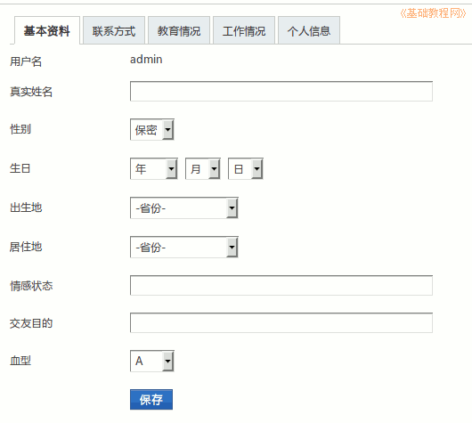

2014-2015 第一学期七年级文字处理和网页教学设计
作者：TeliuTe 来源：基础教程网
四、学会设置个人资料 返回目录 下一课
（一）教学设计
1、学习目标：学会Ubuntu基本操作，校园网操作，中英文指法
2、注意事项：绕过弯来，既不要跳也不要落，一楼过了二楼
3、教学过程：
1）教师准备学案和板书；
2）学生整队进入，开机抄黑板上笔记；
3）教师讲解板书演示操作；
4）学生打指法、日志、完成操作；
5）教师打勾记录学生指法成绩，检查日志和操作；
注：学生抄完笔记就开始打指法、日志，老师讲完后再继续完成；
（二）板书设计(学生笔记)
教学7-4 2014年09月05日 星期五 18:02
04学会设置个人资料
1点编辑可以修改日志
2.进校园网，点右上角设置
3.依次输入后点保存
4.右侧选择是否公开。
操作图示：

（三）课后记
--
顺序有点问题，应该先把中文输入法先讲了，好多不会键盘切换输入法的
改好用户名以后，就应该把中文输入法学习一下，谁知道有鼠标不能切换输入法的问题
--
开学初还是辛苦的，学生的习惯还在培养，
刚从小学上来，喜欢问喜欢吵喜欢下座位，排队也费工夫
--
学会对操作倒是有点熟悉，第一条的编辑都在找，可是找不到
这个点很重要，但是又不常用，还是放第一条好了
--
明天接着上课，还是上今天周五的课，下周多休息一阵
去年也是一开学老是休息，一会这个节一会那个节，多了影响学习
--
学生总有快的和慢的，打字费时间，不过学生倒是闷着头在那里打
小学老师说练过，感觉比去年的基础要好一些，把差的学生挑出来
--
把新标签讲解一下，要求把指法、日志、操作分别放在三个标签里
把自动登录讲了一下，上节课就应该讲的，有的班讲了，有的班就忘记了
--
我这边往下传有些慢，或者说讲解不用太快，养成习惯了学生慌慌张张的
把问题找出来，然后一个一个解决掉，慢的学生不能让掉下去了
返回目录 下一课
本教程由86团学校TeliuTe制作|著作权所有
基础教程网：http://teliute.org/
美丽的校园……
转载和引用本站内容，请保留作者和本站链接。